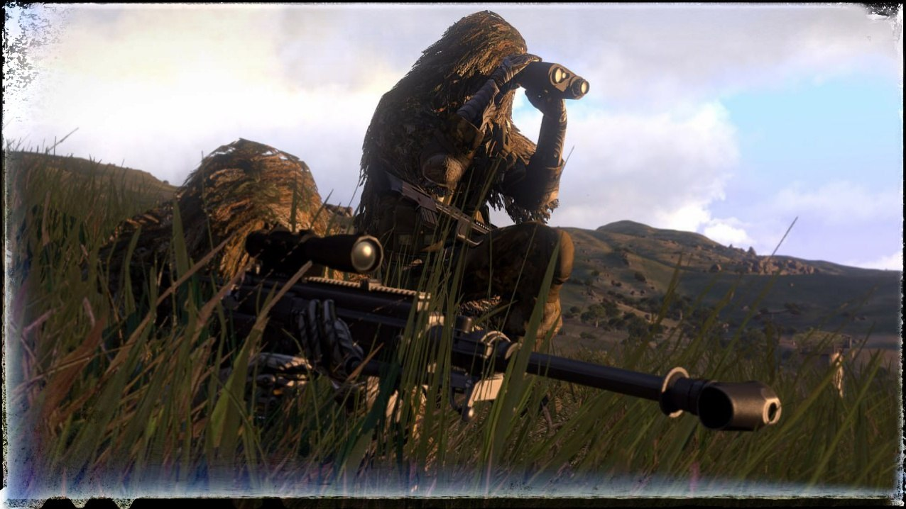

FPV drone Crocus - мод для ARMA 3
ℹ️ Добавляет в "
" два ударных FPV-дрона:
- с кумулятивным БП,
- с термобарическим БП.
📎
Установка мода:
- скачать архив на компьютер, в любое место,
- распаковать,
- запустить лаунчер Arma 3.
- выбрать в боков меню раздел "
МОДЫ
",
- в верхнем меню, выбрать "
локальный мод
",
- указать путь к распакованному архиву,
- снизу на зеленом поле нажать нажать на "
загрузить мод
",
- появиться сообщение - мод установлен.
Чтобы убедиться, что мод установлен:
- перейти в раздел "МОДЫ"
- в списке будет отображаться мод и название "
FPV drone Crocus
", статус -
готов
#игры_симуляторы
#для_windows
Это вложение из поста t.me/platforma_fpv/590/1025

ARMA 3
Представляет собой симулятор боевых действий.
Не имеет аналогов в своем жанре. Игра создана с упором на реализм боев. Нет линеек жизни и брони - противника можно поразить с одного выстрела.
В игре представлено более 20 видов военной технике и 40 оружия.
Поле боя представляет открытый мир площадью 290 км2, с разнообразным ландшафтом от пустыни до городских застроек.
📎
Непроверенная внешняя ссылка
АРМА 3 СКАЧАТЬ АРХИВЫ
АРМА 3 СКАЧАТЬ АРХИВЫ
⚠️ На компьютере изначально должно быть не менее 350 Gb свободного места. т.е. 150 Gb под архивы, и еще 150 Gb под распаковку.
* После распаковки, скачанные архивы можно
удалить для освобождения места
Как скачать симулятор: 2 варианта
1. Скачать архивы (ссылка выше)
- скачать из папки ВСЕ файлы .z0Х (Х - число от 1 до 999) + файл .zip (все файл будут иметь название, кроме расширения) в ОДНУ папку на компьютере
- после скачивания, нажать правой кнопкой и с помощью любого архиватора (WinRAR, 7zip, встроенный) распаковать в текущую папку
- после распаковки необходимо установить - порядок установки в инструкции "Порядок установки".
2. Скачать через торрент
- установить программу µTorrent
- из папки с симулятором скачать файл .torrent
- запустить, выбрать место для скачивания, дождаться загрузки
⏭️
Порядок установки
1. Смонтировать образ в виртуальный привод.
2. Запустить установщик Setup.exe.
3. Следовать инструкциям установщика.
4. Установить галочку о копировании лекарства в установщике Rune, или скопировать содержимое
папки Rune с образа в папку с установленной игрой.
5. Запустить игру, если устанавливаете игру на системный диск - надо запускать игру от имени
администратора.
6. При первом запуске, при попытке игры выйти в сеть, ответить
Отмена
, или заблокировать игру в
брандмауэре.
7. Играть
📎
Непроверенная внешняя ссылка
АРМА 3 СКАЧАТЬ АРХИВЫ
АРМА 3 СКАЧАТЬ АРХИВЫ
⚠️ На компьютере изначально должно быть не менее 350 Gb свободного места. т.е. 150 Gb под архивы, и еще 150 Gb под распаковку.
* После распаковки, скачанные архивы можно
удалить для освобождения места
Дополнение к симулятору "АРМА 3"
📎
#игры_симуляторы
#для_windows
Это вложение из поста t.me/platforma_fpv/590/885

Как проверить установку мода FPV drone Crocus и начать использовать FPV дроны в симуляторе "Арма 3"
Для ознакомления выберем интерфейс "Редактор".
Редактор позволяет создавать совершенно различные боевые сценарии на разных локациях
ℹ️ Предусмотрены 3 стороны (желтая фигура это реквизиты, фиолетовые - гражданские.). Синие, красные и зеленые это основные фракции (HATO, CSAT, AAF соответственно). В правом верхнем углу выбираем фракцию и боевые единицы которые необходимо разместить на карте.
- В открывшемся списке выбираем раздел "Люди".
- В открывшемся списке выбираем "Оператор БпЛА". Нажимаем на него левой кнопкой мыши и и ставим перед собой еще одним щелчком левой кнопки мыши.
* Передвижение камеры в редакторе происходит клавишами WASD, а поворот камеры - движением мыши с зажатой правой кнопкой.
- Далее нам нужно добавить дрон из мода. Чтобы сделать это, жмем на стрелку в поисковой строке в правом верхнем углу.
- Из выпадающего списка выбираем мод
FPV drone
, ставим его рядом с оператором БпЛА.
- Нажимаем Enter и запускаем симуляцию.
ℹ️ Ходить на WASD, обзор на мышке.
Рядом с Вами будет установленный дрон, наведите на него мышкой, покрутите колесико, в левом верхнем углу появится контекстное меню.
Колесиком выбираем
"Подключить терминал к БпЛА"
и нажатием на колесико принимаем этот пункт.
⏭️ Отходим от дрона. Снова открываем контекстное меню в левом верхнем углу, крутим колесико на мышке, появится новый пункт "
Взять управление
", снова выбираем и подтверждаем нажатием на колесико.
Двигатели запустятся, при прибавлении газа на аппе (Если управление заработало корректно).
⚠️Если хотим перезапустить сценарий, то нажимаем
ESC
и выбираем "Заново".
📎
#инструкции
#игры_симуляторы
Веб-страница создана автоматически на основе поста пользователя ПЛАТФОРМА_FPV